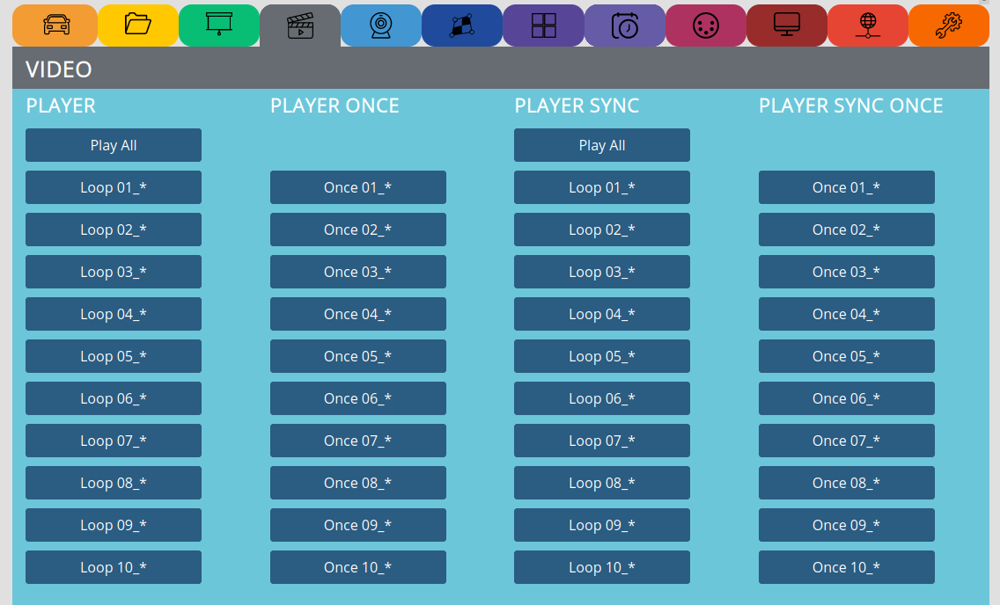

VIDEO¶
The section for all the video and multichannel video stuff:
see video tutorial: https://video.pocketvj.com/AVideo/video/30/pocketvj_multichannel_video
PLAYER¶
Play All => Plays all videos from
/internal/video/folderLoop => loops a single file from
/internal/video/folder with a naming like: 01_myvideo.mp4
PLAYER ONCE¶
Once => plays a single file from /internal/video/ folder with a naming like: 01_myvideo.mp4 only one time
Note
Do not use empty spaces, special characters and very long filenames.
Rename your videos with a short name without any empty spaces or umlauts, you can do this also with the ‘Filename-Fixer’ function.
max. audio bitrate is: 160kbit
PLAYER SYNC¶
Play All => Plays all videos from
/internal/video/folder with sending the synchronisation timecode over RJ45 for receivers/slavesLoop => loops a single file from
/internal/video/folder with a naming like: 01_myvideo.mp4
PLAYER SYNC ONCE¶
Once => plays a single file from
`/internal/video/`folder with a naming like: 01_myvideo.mp4 only one time with sending the synchronisation timecode over RJ45 for receivers/slaves
Note
To be able to sync, the file names on master and slave must be exactly the same!
SYNC WIFI¶
You can sync your PocketVJ’s over Wifi. Its only possible to sync one video file over wifi and this file must be named: wifisync.mp4 on all units (there is no audiotrack supported!)
First set the wifi name and password of the slave under NETWORK SETTINGS
The filename must be: wifisync.mp4 otherwhise it will not work!
Note
There will be no audio
Might be unstable in public spaces
Slaves have a few Minutes to be ready
MULTICHANNEL¶
Sync any other PocketVJ for a multichannel installation. Connect all the PocketVJ’s together with an RJ45 network.
Receiver/Slave => This will listen to the masters timecode
Receiver/Slave => This will listen to the masters timecode and when played once, to be used together with BUTTONS play once
Stop Slaves => Sends a Stop all commend to players in the network with Ip 192.168.2.100 - 110 and 10.0.0.100 - 110
Set long Videos => If you are syncing very large videos this might be selected since it takes time until everything is loaded (takes 10 seconds to sync).
Set short Videos => If you are syncing very short videos to go into sync as fast as possible (min. video length should be 60 seconds!)
Note
Syncing several players might take up to 10 Seconds, make a video with a still image for the first 10 Seconds
min. Video length should be 60 seconds, it makes sense to produce videos which are 3-5 min. to have a nice sync experience
If you use a router, make sure to be in the same subnet
MULTICHANNEL SYNCING¶
All the movie files must have the same name on master and slaves.
Set only one PocketVJ to master, set all others to slave.
2. Connect them directly with a RJ45 cable if there is only one slave, use a switch to connect more players, if you use a router, make sure its configured to 192.168.2.1
Note
If you connect a slave after the master is already running, master must be restarted to detect the slave and send the timecode.
We recommend to make the first 10s of the movie a still image, so there will be no visible syncs for the observer.
Make sure there are only video files in the ‘video’ folder, if there are images etc. sync will not work.
For syncing you must have same conditions for every Pocket VJ, that means:
Same output resolution, movie files with same length, framerate and bitrate.
If you use different conditions, you might have to adjust the sync window by hand
Sync has an accuracy of ±3fps (regular its between 0 and1 fps)
If there is always the same offset of synced files you can manually change the sync window and tolerance to fit our needs.
Its depending on the bitrate check: https://github.com/turingmachine/omxplayer-sync or ask https://github.com/magdesign/PocketVJ-CP-exh/issues
Play the testfile and take pictures with your camera to check the timecode offset.
Make sure your files are at least 60s in duration to increase the stability of seamless looping.
For Syncing with high bitrates (1080p with 12 MB/s or more) you may set the SYNC_OFFSET to a higher value.
SLIDESHOW after¶
If you play a video Once 0x _* and want that afterwards a slideshow is starting.
Enable
Enables slideshow
Disable
Diables slideshow
Note
To stop you need push STOP 2x, first will kill video, second kill imageplayer.
Set the slideshow time in the green PRESENTER section.
If you only want one slide to display, just add one slide to the images folder.
FADE¶
Here you can fade the playing video to black and vice versa. If this feature is not working, you need to update and check that you have omxplayer version 2018 in SYSTEM SETTINGS
SPEED¶
Adjust the playback speed, keep in mind that this is not compatible with syncing several players.